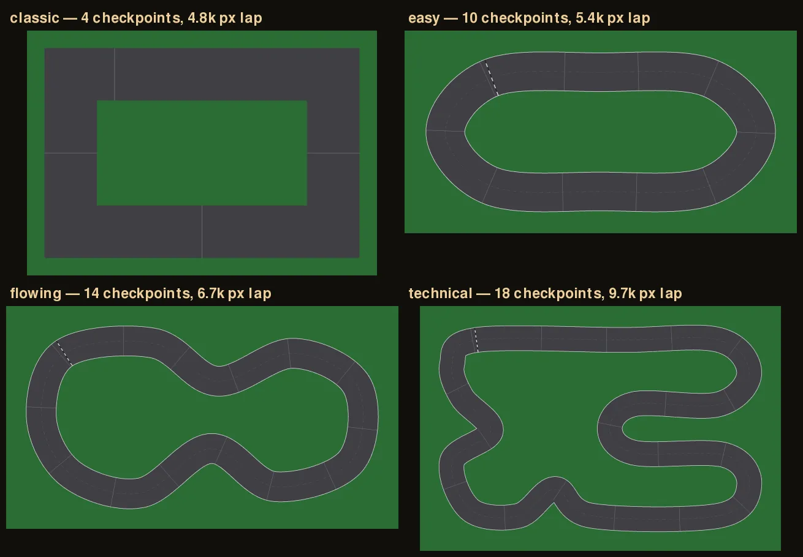

Give each car a view.
Seven rays measure nearby obstacles. Forward and sideways velocity, plus the direction to the next checkpoint, bring the observation to 11 inputs.
PLAYABLE DESKTOP BUILD / v2.0 RELEASED
AI Racer is a 2D racing game in Python. A population of neural-network drivers learns to get round a circuit through selection and mutation, and you can drive it yourself too.
DOWNLOAD / RUN LOCALLY
Clone the repository, or download the v2.0 ZIP. With Python 3.10 or newer, run python -m pip install -r requirements.txt and then python main.py. On Windows you can use py in place of python.
Drive with WASD or the arrow keys. Tab switches to the saved champion AI and R resets the attempt. Add --track flowing (or easy or technical) to try another circuit. Run python live_train.py to watch a new population evolve, and press G for the progress graph. The README covers every setting and control.
The ZIP is built from the repository's v2.0 tag. GitHub always has the latest version.
01 / THE IDEA
I was fascinated by videos of AI agents improving over generations. I wanted to build my own version: a game I could drive manually, with enough momentum and sliding that an AI would have to learn how to handle it.
I started with a moving rectangle and built up the track, collisions, checkpoints and lap timing before adding sensors and neural-network controllers. Watching early drivers crash, then later generations get around the first corner and eventually complete the circuit, made the learning process tangible.
This is an ongoing learning project developed with AI assistance for explanation, implementation and debugging. I’ve been working through the physics, control logic and evolutionary process as I build.
02 / HOW IT LEARNS
Seven rays measure nearby obstacles. Forward and sideways velocity, plus the direction to the next checkpoint, bring the observation to 11 inputs.
A small neural network with eight hidden neurons produces steering, accelerator and brake commands. The car’s physics determines what happens next.
Each attempt earns fitness for ordered checkpoints and partial progress towards the next one. Crashes, inactivity and time limits end attempts.
The trainer preserves the strongest controllers, mutates copies of successful networks and introduces new random drivers. A new generation then tries again.
The network’s weights stay fixed during an attempt. Learning happens between generations through selection and mutation, rather than through a weight update after every crash.
03 / ENGINEERING
Manual input and neural-network output feed the same car controller. Fixed simulation steps keep physics consistent when training runs faster than playback.
Each agent owns a car, sensors and race state. The track is shared, and cars pass through each other so they face the same environment.
The population viewer shows active drivers, faded crashes, a highlighted leader and generation statistics. It supports pausing, faster playback and camera switching.
Camera movement affects the display, while physics and collisions stay in world coordinates. Live and non-rendered evaluation use the same Agent attempt logic.
04 / A DEBUGGING LESSON
When AI mode initially appeared broken, inspecting the network’s outputs revealed that it was pressing both the accelerator and brake. Braking was stronger, so its speed returned to zero every step.
The game was also creating the same random network at startup rather than loading the saved champion. Connecting the trained parameters to playback made it possible to watch the controller that training had actually selected.
The lesson: inspect the observations and actions before assuming the simulation is broken, and verify that evaluation and playback use the intended controller.
05 / v2.0 & WHAT THE EXPERIMENTS SHOWED
Version 2.0 adds curved circuits built from a centre-line path and road width, checkpoints at any angle, fitness measured along the route, and a bonus for faster laps. It also adds save/resume, live progress graphs and tools for repeatable experiments.

The drivers learn behaviour that transfers to similar, smoother tracks, but not yet to tight hairpins they never saw. My next experiments are training on a rotation of tracks and giving the network a look-ahead input.
Twenty unit tests cover the physics, checkpoints at any angle, progress through hairpins, the lap reward, exact save/resume and training. Full tables are in the repository README ↗.